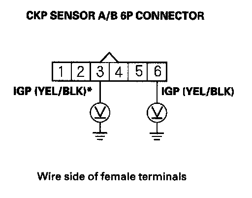
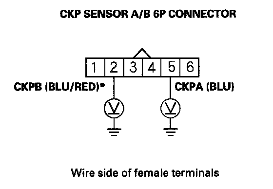
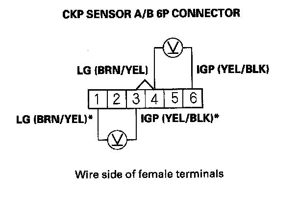
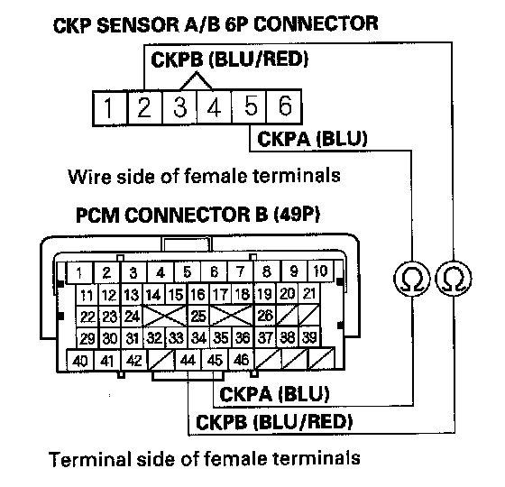
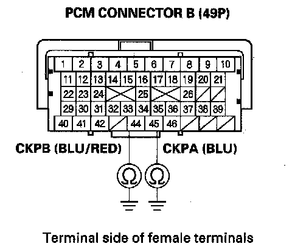

Fuel and Emissions
DTC P0335: CKP Sensor A No SignalDTC P0385: CKP Sensor B No Signal
NOTE:
- Before you troubleshoot, record all freeze data and any on-board snapshot, and review the general troubleshooting information.
- Information marked with an asterisk (*) applies to CKP sensor B.
1. Turn the ignition switch ON (II).
2. Clear the DTC with the HDS.
3. Start the engine.
4. Check for Temporary DTCs or DTCs with the HDS.
Is DTC P0335 and/or P0385 indicated?
YES - Go to step 5.
NO - Intermittent failure, the system is OK at this time. Check for poor connections or loose terminals at CKP sensor A/B and the PCM.
5. Turn the ignition switch OFF.
6. Disconnect CKP sensor A/B 6P connector.
7. Turn the ignition switch ON (II).

8. Measure voltage between CKP sensor A/B 6P connector terminal No. 6 (No. 3)* and body ground.
Is there battery voltage?
YES - Go to step 9.
NO - Repair open in the wire between CKP sensor A/B and the under-hood fuse/relay box (PGM-FI main relay 1), then go to step 18.

9. Measure voltage between CKP sensor A/B 6P connector terminal No. 5 (No. 2)* and body ground.
Is there about 5 V?
YES - Go to step 10.
NO - Go to step 11.

10. Measure voltage between CKP sensor A/B 6P connector terminals No. 4 (No. 1)* and No. 6 (No. 3)*.
Is there battery voltage?
YES - Go to step 16.
NO - Repair open in the wire between CKP sensor A/B and G101, then go to step 18.
11. Turn the ignition switch OFF.
12. Jump the SCS line with the HDS.
13. Disconnect PCM connector B (49P).

14. Check for continuity between PCM connector terminal B45 (B44)* and CKP sensor A/B 6P connector No. 5 (No. 2)*.
Is there continuity?
YES - Go to step 15.
NO - Repair open in the wire between the PCM (B45 (B44) *) and CKP sensor A/B, then go to step 18.

15. Check for continuity between PCM connector terminal B45 (B44) * and body ground.
Is there continuity?
YES - Repair short in the wire between the PCM (B45 (B44) *) and CKP sensor A/B, then go to step 18.
NO - Go to step 25.
16. Turn the ignition switch OFF.
17. Replace the CKP sensor.
18. Reconnect all connectors.
19. Turn the ignition switch ON (II).
20. Reset the PCM with the HDS.
21. Clear the CKP pattern with the HDS.
22. Do the PCM idle learn procedure.
23. Do the CKP pattern learn procedure.
24. Check for Temporary DTCs or DTCs with the HDS.
Is DTC P0335 and/or P0385* indicated?
YES - Check for poor connections or loose terminals at CKP sensor A/B and the PCM, then go to step 1.
NO - Troubleshooting is complete. If any other Temporary DTCs or DTCs are indicated, go to the indicated DTCs troubleshooting.
25. Reconnect all connectors.
26. Update the PCM if it does not have the latest software, or substitute a known-good PCM.
27. Check for Temporary DTCs or DTCs with the HDS.
Is DTC P0335 and/or P0385* indicated?
YES - Check for poor connections or loose terminals at CKP sensor A/B and the PCM. If the PCM was updated, substitute a known-good PCM, then recheck. If the PCM was substituted, go to step 1.
NO - If the PCM was updated, troubleshooting is complete. If the PCM was substituted, replace the original PCM. If any other Temporary DTCs or DTCs are indicated, go to the indicated DTCs troubleshooting.